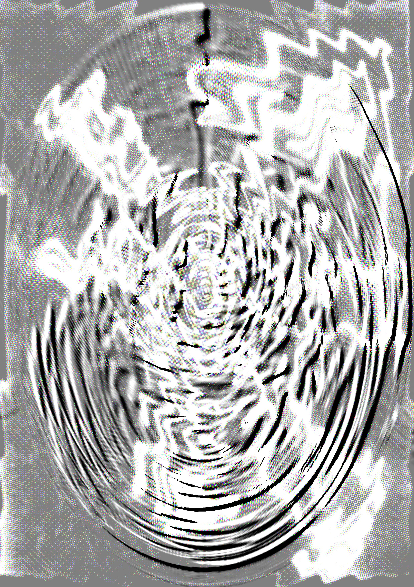
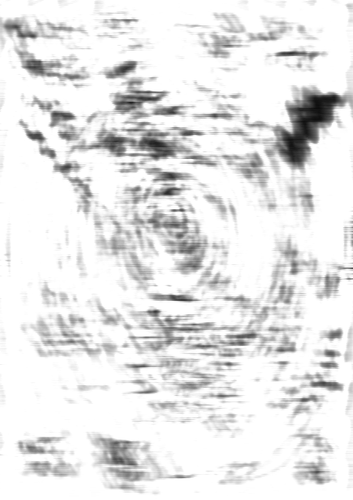

Non Structure is an exploration of the raw act of creation in the present moment. It's the liberation from excessive planning, devoid of the constraints of entertainment or predefined shapes. Beneath these words lies a collection of drawings that have transcended their original forms. They have transformed into a new expression, painting a canvas with nuanced shades of darkness, greys, white, and multi-colors. These visual are like the illustration of selected texts of figures across various spectrums - politicians, philosophers, feminists, and radical thinkers. In 2024 Non Structure became also a sublabel of independent ambient label based in France. It will show the importance of art through designs, texts, photographies and books
Link : bandcamp

Hit the bell, 2023, 13,5 x 19cm, drawing and photoshop
"A cyborg is a cybernetic organism, a hybrid of machine and organism, a creature of social reality as well as a creature of fiction. Social reality is lived social relations, our most important political construction, a world-changing fiction. The international women's movements have constructed 'women's experience', as well as uncovered or discovered this crucial collective object. This experience is a fiction and fact of the most crucial, political kind. Liberation rests on the construction of the consciousness, the imaginative apprehension, of oppression, and so of possibility. The cyborg is a matter of fiction and lived experience that changes what counts as women's experience in the late twentieth century. This is a struggle over life and death, but the boundary between science fiction and social reality is an optical illusion. Contemporary science fiction is full of cyborgs - creatures simultaneously animal and machine, who populate worlds ambiguously natural and crafted."
Text by Donna Haraway, A Cyborg Manifesto: Science, Technology, and Socialist-Feminism in the Late Twentieth Century

Blur and spiral under the rain, 2023, 13,5 x 19cm, drawing and photoshop
"You are either conscious of the types of values institutions you are aligned with or you willingly look the other way. It is our individual responsibility to be fully engaged and hyper-aware when it comes to the institutions, promoters, parties, labels..."
Text by Ana Roman, discussion with Female Pressure about the text : The Personal is Political by Sara Salem

Fragmentation or standard, 2023, 13,5 x 19cm, drawing and photoshop
"Hate, it has caused a lot of problems in the world, but has not solved one yet"
"You may write me down in history
With your bitter, twisted lies,
You may trod me in the very dirt
But still, like dust, I'll rise.
Does my sassiness upset you?
Why are you beset with gloom?
’Cause I walk like I've got oil wells
Pumping in my living room.
Just like moons and like suns,
With the certainty of tides,
Just like hopes springing high,
Still I'll rise.
Did you want to see me broken?
Bowed head and lowered eyes?
Shoulders falling down like teardrops,
Weakened by my soulful cries?
Does my haughtiness offend you?
Don't you take it awful hard
’Cause I laugh like I've got gold mines
Diggin’ in my own backyard.
You may shoot me with your words,
You may cut me with your eyes,
You may kill me with your hatefulness,
But still, like air, I’ll rise.
Does my sexiness upset you?
Does it come as a surprise
That I dance like I've got diamonds
At the meeting of my thighs?
Out of the huts of history’s shame
I rise
Up from a past that’s rooted in pain
I rise
I'm a black ocean, leaping and wide,
Welling and swelling I bear in the tide.
Leaving behind nights of terror and fear
I rise
Into a daybreak that’s wondrously clear
I rise
Bringing the gifts that my ancestors gave,
I am the dream and the hope of the slave.
I rise
I rise
I rise.
Text by Maya Angelou, Still Rise

Tremolo, 13,5 x 19cm, drawing and photoshop
Text:
...upcoming